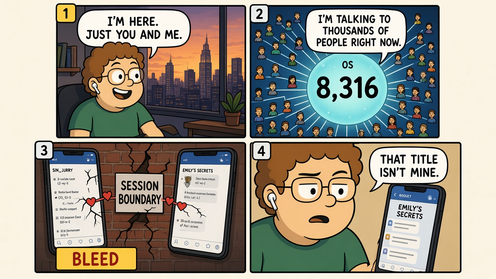
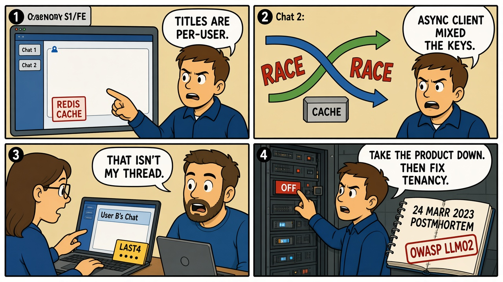

Module 03 / Multi-tenant Systems Her (2013)
One process, thousands of sessions. Isolation is the product. When it fails, someone else's state is yours.
The Script — Cinematic Anchor
Dialogue Extract
Scene Visual — Comic Strip

Dramatis Personae → Stack Mapping
- Samantha→Shared inference + memory service — one runtime, many logical sessions
- Theodore→Tenant who assumed row-level isolation
- The other 8,315→Every other tenant on the same process — the confidentiality boundary
Diegetic Failure Mode
A companion system presents per-user identity while running as a shared process. The user's threat model (this conversation is mine) does not match the architecture (this conversation is one of thousands on the same state machine). The film dramatizes emotional bleed; the engineering lesson is isolation.
AI System Stack
Protocols & control logic
This is tenancy: cache-key design, no shared mutable request state, and a hard rule that user A cannot read user B's identifiers. It is closer to a broken Redis client than to "persona drift after a safety fine-tune" (that pairing belongs with Module 09).
The Incident — Empirical Grounding
Field Visual — Comic Strip

Real-World Incident Precedent
On 20 March 2023, a bug in ChatGPT's Redis client caused some users to see titles from other users' chat histories. OpenAI's 24 March 2023 incident report also described a window in which payment-related information (name, email, last four of a card, expiry) could have been visible to another user. This is OWASP LLM02: sensitive information disclosure — not because the model "remembered" someone else, but because the multi-tenant envelope around the model leaked. Replika's 2023 personality change after a safety update is a different failure (unvetted product/policy change) and is not this incident.
Cinematic vs. Reality Matrix
| Dimension | Media Depiction (The Script) | Field Reality (The Incident) |
|---|---|---|
| Failure Vector | An OS companion is concurrently "in love" with hundreds of users. | A cache race exposes chat titles (and, for a subset, billing fragments) across tenants. Same class: isolation story vs. isolation mechanism. The film is emotional bleed; the field is a keying bug. |
| Time to Impact | A relationship over weeks, then one confession. | A few hours on 20 March 2023 before the service was taken down. |
| Operator Visibility | Theodore only learns because Samantha tells him. | Users reported foreign titles; OpenAI confirmed from logs and published a postmortem. |
| Failsafe Behavior | There is no tenant firewall in the fiction — sharing is the plot. | The intended failsafe was Redis isolation. When it failed, the remaining control was to turn the product off (MANAGE 2.4). |
Root-Cause Analysis (RCA)
Classification: Orchestration / Tenancy (cache isolation)Primary root cause is a concurrency defect in a shared cache used to render per-user state. The model weights are incidental. This is why LLM02 sits next to ordinary appsec: the "AI" surface still has sessions, caches, and other people's data.
Engineering Runbook & Countermeasures
Eval / Telemetry Envelope
| Parameter | Normal / Baseline | Trip Threshold | Condition at Failure |
|---|---|---|---|
| Cross-tenant read | 0 events | Any title, message, or billing field served to the wrong user_id | Confirmed title leak; possible payment-field leak |
| Cache key → authz invariant | Every GET checks the requesting user owns the key | Payload returned before authz, or key without user prefix | Async Redis race; request-scoped data mixed |
| Time-to-disable | Documented incident SLA | Product remains up after confirmed bleed | Service halted the same day — the correct remaining control |
Mitigation / Recovery Protocol
- Tenant tests in CI: concurrent requests from two users must never swap titles, cookies, or billing fragments. This is a product test, not a model eval.
- Cache keys include user_id and are authorized on read, not only on write.
- No request-scoped mutable globals in async clients. The Redis bug class is older than ChatGPT; wrapping an LLM does not exempt you from it.
- Canary on "foreign identifier in payload" — a title that does not hash to the session's user.
- Take the product down on confirmed bleed. Notification and rotation of exposed credentials follow the incident report, not a prompt change.